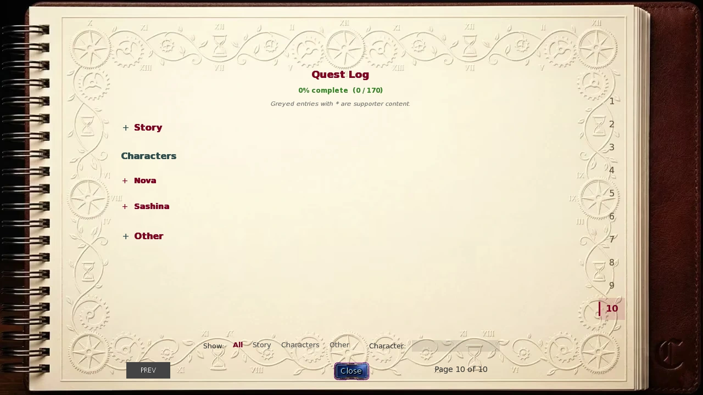
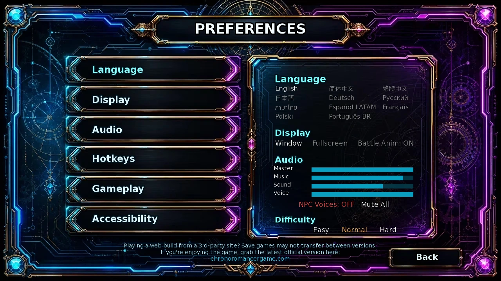
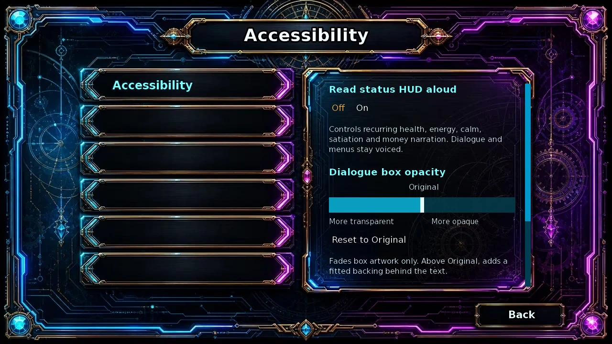
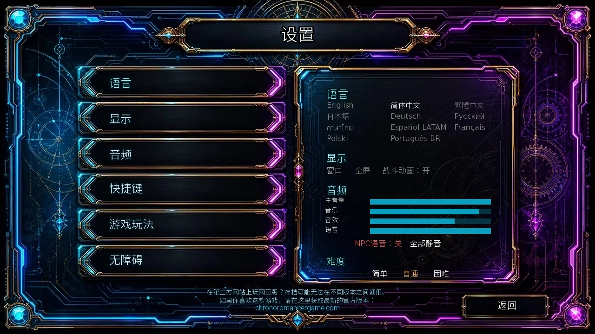
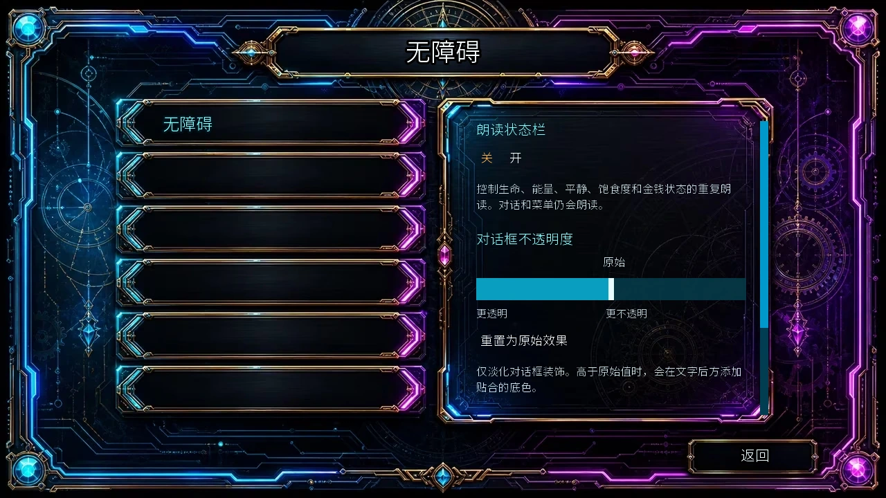

Select a screenshot to enlarge it. Screens show example inventories and progress.
Starting out and managing time
How do I travel between eras?
Use the travel actions at your home. The Future and Medieval arrivals have their own onward routes. District-map passes and Warp destinations are separate unlocks; travelling between eras does not automatically unlock every map shortcut. Guide →
How do I unlock the Rose & Thorn?
Follow the Sashina and King Graham quest chain, including its potato-related deliveries. Raising the King’s relationship alone is not the acquisition condition. The business guide separates acquisition, room building and later recruitment. Guide →
I have run out of Energy. What should I do?
Recover at an available rest or sleep action, or use Energy Items if you have stock. Inspect recovery, time and cost before starting another long activity. Ordinary recovery items cannot raise a resource above its maximum. Guide →
Where can I earn money early?
Start with available work and the specialty jobs that match your profession. Keep enough resources for travel and recovery; a large one-off reward is not the same as dependable daily income. Compare current opportunities in the Wealth Guide. Guide →
What should a new player focus on?
Learn recovery and travel, follow the tutorial objectives, and work on one nearby route at a time. A completed tutorial still needs its reward claimed. You do not need to maximize every stat or relationship before beginning the story. Guide →
I found a caterpillar. What is it for?
Keep it for the rearing system. Discovery, population growth, harvesting and workshop processing are different steps. Check the system guide before selling a specimen you still need for breeding or the collection. Guide →
Does leaving a menu open use up my deadline?
The deadline advances with in-game time-costing activities, not simply real time spent looking at a normal action menu. Travel, work and other timed actions still count. Extend the active timeline before it runs out rather than waiting until no shopping opportunity remains. Guide →
Stats, skills and finding people
Where should I train a particular stat or skill?
Read the action’s displayed reward and requirements, then use the Skills reference and the relevant teacher’s guide. A catalogue stat threshold is not a universal lock for every learning method: different named lessons and random sources have different rules. Guide →
How do I raise Creativity?
Choose an activity that actually lists Creativity as a reward. An activity being artistic, musical or craft-related does not by itself mean it raises that core stat. Teacher and activity requirements still apply. Guide →
How do I learn Creative Cooking?
Look in the Future Fringe Zone’s Unregistered Housing Complex for the named lesson. The tutorial objective asks you to learn the skill; simply collecting Ingredients or cooking an ordinary meal is a different action. Guide →
Which skill shows exact relationship points?
Data Mining reveals numerical relationship progress. Its named lesson at the Universal Knowledge Synthesis Institute requires Technology 20, costs 200 Wealth and 180 minutes, and uses 60 Energy and 50 Calm. Other information skills reveal other kinds of character information. Guide →
How does Beast progression differ from Beast Mode?
Beast is a player stat; Beast Mode is a content feature. Their names do not mean ordinary relationship points or Erotic Experience. Relevant rewards and modifications have their own availability rules; follow the displayed mode and action requirements. Guide →
How do I enter Glitch’s Den?
After completing Story 21, use Visit Glitch’s Den at the Unregistered Housing Complex in the Future Fringe Zone. The portrait is available all day. Her later personal events have additional story and relationship requirements; finding the entrance does not complete those prerequisites. Guide →
How do I find Blinky without spoiling her story?
Follow her character guide’s meeting and next-step requirements. It gives the route without explaining major reveals. A character existing in the directory is not proof that every save can visit her immediately. Guide →
Where is the Dojo, and when is it open?
Go through the Present Downtown streets to the Dojo. Its normal training window is 10:00–22:00. Lilu’s personal scenes and lessons can have their own additional requirements. Guide →
Why is Robin not at the Hunting Lodge?
Her normal schedule moves between the archery range 09:00–18:00, the lodge 18:00–03:00 and the brothel Training Room 06:00–09:00. These are starting windows; check the current venue and any action-specific requirement. Guide →
Character and quest blockers
What matters for Gandon’s spellbook errand?
Follow the specific Sabbath and Gandon errands, including the named Wizard Wine. Ordinary Wine and a purchased Grimoire upgrade do not stand in for completing a quest delivery. The character guide lists the actual sequence. Guide →
How do I open the Noble Quarter heist?
Follow Thieves Guild initiation, Shadow’s route and the required promotion/introductory event. Joining the guild is not itself the Noble Quarter unlock. The guild guide separates joining, Clout ranks, the introduction and later base-stat heist checks. Guide →
Why can I not visit Portia’s Villa yet?
It is part of Portia’s personal progression. Check the prerequisite conversation, relationship, time window and content access in her guide rather than treating the map name as a purchase button. Guide →
Why are some band conversations unavailable?
Band standing and personal progress can gate specific conversations. Check the exact member and action: Cotton, Talena and Nyx do not share one interchangeable relationship value. The Bards Guild is also its own system. Guide →
What does Precognition do?
It is a combat skill that can help avoid attacks. Its combat effect and acquisition are separate from simply raising Mystic or Perception; use the Skills and Kasumi guides for the current rules. Guide →
How should I evaluate the Bionic Penile Implant now?
Use the current Body Modifications guide to distinguish the clinic’s earlier implant service from Tinker’s expanded workshop, saved levels and costs. An old description saying it is simply a repeatable free stat reward does not explain the present system. Guide →
Where are Willow’s Glowcap Mushrooms?
They come from the relevant Back Alleys search encounter after meeting Willow. Finding Willow and finding the mushrooms are separate outcomes, and the mushrooms must actually be collected. Ordinary dungeon mushrooms are different items. Guide →
Why has Willow not joined the business?
Her route requires the mushroom conversation, subsequent personal progress, the required relationship and business ownership, followed by accepting the clinic proposal. Handing over mushrooms alone is not the complete recruitment condition. Recruitment does not automatically build the Infirmary. Guide →
How do I obtain Lime as a maid?
Follow Wizard faction progression and the Initiation Test route. Learning spells, reaching Wizard Clout and completing the test are different requirements. Gandon’s separate errand involving Sabbath is not the same test. Guide →
Can I recruit Violet?
Yes. Her maid acquisition is connected to Bards Guild progression, including songwriting and performance requirements. The Maid guide also explains her levels, equipment and daily cleaning after acquisition. Guide →
What does H2H mean, and where do I find it?
H2H means Heart-to-Heart, a named character conversation. Find its individual title in the character’s portrait menu and check that conversation’s own prerequisites. Ordinary Talk does not complete a named H2H requirement. Conversation guide →

Business, workers and inventories
How do I upgrade rooms?
Use room management and check the actual room type. Worker bedrooms, service-room levels, apprentices and unlocked activities are different parts of the business. Paying for a bedroom does not fill every service-room assignment. Guide →
How do I train Elara?
Use her available worker-training actions in the appropriate room after meeting their requirements. Permanent gift upgrades, ordinary training, personal relationship scenes and her management services are separate tracks. Guide →
Where can I check worker availability?
Check worker management, room assignments and the character’s current availability. Rest, sickness, strikes, vacations and personal situations can change who is available. A recruited worker is not necessarily active or available for every activity. Guide →
What do Talk and Praise change for workers?
Read the worker action’s displayed benefit, cost and daily limit. Business Loyalty, Stress and other worker values are separate from that NPC’s ordinary affection. The calculations guide explains how worker state reaches the daily report. Guide →
What happens when Loyalty is low?
Check the current rest, sickness and strike rules rather than assuming the worker has disappeared permanently. Business state can stop work and change income. Restore the relevant condition and review the next completed report. Guide →
I reached investment level5. Do I own the company?
Level 5 investment and acquisition are separate. Use the additional Buyout action and its price to become the owner; the portfolio distinguishes Buyout from Acquired. Guide →
Does only the maid currently on screen clean?
Daily cleaning counts all acquired maids, with their levels and relevant equipment. The currently visiting portrait is not the daily-cleaning roster. Variance equipment also changes the range of the daily roll rather than simply removing randomness. Guide →
Where did my army item go in Supplies?
Supplies has six categories but shows five rows at once. Scroll or use its arrow to reveal the bottom Army Equipment row, then equip the item on a recruited hero in Barracks. Owning the item alone does not assign a wearer. Guide →
Crystals and long-term income
Where can I get more Crystals?
Use the current source table: tutorials, eligible relationship and progression milestones, and genuinely repeatable activities have different claim rules. Replaying a one-time event or starting New Game+ does not automatically renew every Crystal reward. Guide →
How do I fund expensive expansions?
Compare steady work, investments and the business using net income after costs. An uncollected report or investment return is not yet money in your wallet. Large projects are easier to plan when you separate the purchase price from ongoing upkeep. Guide →
Where do Materials, Fabrics and Ingredients come from?
Use ordinary shops, gathering and the relevant activity rewards. Lillian’s repeatable Resource Boost grants each category 50 Common,20 Rare and 3 Epic for 1 Crystal. That purchase supplies all three resource categories, not one randomly chosen category. Guide →
Where is Gonzo, and what about Floor13 farming?
Gonzo is a dungeon encounter, not a permanently staffed town shop. Floor 13’s coin method uses a fresh eligible floor map each time. Movement has a 4-minute base per step before its modifiers; a fixed “one hour per coin” estimate is unreliable. Guide →
Must I finish the story before New Game+?
No. The current timeline must reach day 20 and you need 5 Crystals plus access to Sylwithe’s Hollow. It is optional. Read the carryover/reset list and collect or cancel pending business and activity rewards before confirming. Guide →
Minigames and reward claims
Which platforms support tower defence?
Current battle entry supports Windows, Linux, macOS and supported Android installations. Use the game’s normal launch action. If TD cannot start, follow the platform-specific help in the TD guide rather than assuming the story requires Windows. Guide →
Does disabling story TD grant its victories and rewards?
No. It bypasses specified story and character victory requirements. It does not itself grant campaign clears, recruits, EXP, Clout or Infinite access. Infinite normally opens by actually clearing the corresponding campaign. Guide →
Can I bank a battle and resume its battlefield later?
Banking retains eligible rewards; it is not a resumable battlefield save. Returning to Chronoromancer ends that attempt. Returning to the battlefield from the system menu continues the current attempt. Guide →
Why has a high-score prize not taken effect?
High score, upgrade points and activated prizes are separate. Open Arcade Prizes and activate the unlocked reward. A qualifying score does not mean every prize has already been claimed, and upgrades use their own point balance. Guide →
Does Kupie progress raise ordinary affection automatically?
Kupie’s Love Training has its own roster levels, affection, Hearts, Charms and rewards. Those are separate from the main relationship system and Army EXP. Use its production and Rebirth rules rather than spending ordinary relationship resources by assumption. Guide →
Language, readability and controls
How do I switch the game to Simplified Chinese?
Open Preferences and select 简体中文 under Language. This changes the game’s interface and text. The website’s EN / 简体中文 control is separate, so choose the language in both places.
Can I make dialogue and choices larger?
Open Preferences → Accessibility, scroll to Text size and select Large. This enlarges dialogue and choices where the existing layout has room; it does not enlarge every menu or image. Choose Default to restore the usual text size.
How can I improve text contrast?
In Accessibility, adjust Dialogue box opacity. The slider fades the box artwork; moving above Original adds a fitted backing behind the text. Reset to Original restores the starting appearance. This is a readability setting, not the text-speed control.
Can I stop repeated status announcements?
Turn Read status HUD aloud off in Accessibility to stop recurring Health, Energy, Calm, Satiation and money announcements. Dialogue and menu narration remain available; this switch does not mute all sound. Music, effects and voice levels are in the main Preferences audio area.
Can I change the keyboard controls?
On desktop, open Preferences → Hotkeys. Select a binding and press a supported key; Escape cancels the change. Combat and movement have separate binding groups, and settings are saved automatically. Restore Defaults resets the bindings. Touch interfaces do not use this desktop key editor.
Where are the clock and dungeon click-move settings?
Open Preferences → Gameplay. Choose 12-hour or 24-hour time, and toggle Dungeon click-to-move. Click-to-move changes input, not the time, hunger, encounter or terrain rules of a dungeon step. Guide →
What are the Quick Save and Quick Load keys?
On desktop, F 4 is Quick Save and F 5 is Quick Load. They use one quick slot, separate from manual slots. Quick actions can be unavailable in menus, battles or other protected states; read the notification. Keep manual saves for important milestones. Before a permitted Quick Load, the game requires a verified recovery autosave and cancels the load if that cannot be made.


Updates, optional content and community help
How should I keep saves when updating?
Make a separate manual save and keep a backup before replacing an installation. Read the new release’s installation notes and load the intended old slot, then save into another slot after checking it. New Game+ has additional platform-binding rules, covered separately. Guide →
How do Extras unlock?
Open EXTRAS from the main menu, then choose a character. Available content is grouped into Scenes, Images and Animations. Earn the corresponding content during ordinary play and meet any access requirement shown by the game; seeing a locked entry does not mean it is already earned. Replays let you revisit earned content without advancing the current route or repeating its ordinary rewards. Gallery collection and the current timeline’s quest progress are separate. Guide →
Why is some content locked?
Check the action tooltip: story, relationship, time, equipment, optional preferences and content access are different requirements. A paid or optional access condition does not replace gameplay prerequisites, and satisfying a stat threshold does not complete an earlier scene.
How do optional worlds differ from the base game?
Some wiki characters belong to separately installed optional content. Its own installation, Mod Manager and access requirements apply; a base-game map need not show its destinations. Use the Locations reference’s optional-world note and the relevant character guide. Guide →
Where should I ask about a missing community supporter role?
Use the current community and supporter-help links on the official website. Community-account roles are handled there; the wiki’s gameplay steps do not assign them. Official website →
Does the game now include pregnancy and family progression?
Yes. It is an optional system with unlock/preferences, eligible character conditions and continuing family stages. Enable only the content you want, then follow the character-specific requirements and the system timeline. Guide →
Where do I check Steam or other release plans?
Check official announcements for platform and release-date information. The website’s download area lists the versions currently available. Official website →
Where can I check voice and audio information?
Use the installed game’s audio settings and credits for its current sound options and contributors. Check official announcements for additional voice work. Official website →
Who made the theme song?
The theme is “Would You”. The game credits name Chrono as writer/producer and Vixen 777 as vocalist. The lyrics are in Mandarin Chinese. Official website →
How do I reveal the Witch’s Hut entrance?
At the Whispering Woods, the entrance requires Mystic 45 and Perception 45. Both are needed. This entrance check is separate from any later activity’s relationship or content-access requirements. Guide →
起步、旅行与时间
怎样前往其他时代？
从自己的住处使用时代旅行行动。抵达未来或中世纪后，再按当地路线继续前进。区域地图通行证与传送目的地分别解锁；能够跨时代旅行，不等于已经开放所有地图捷径。 查看指南 →
怎样取得玫瑰与荆棘经营权？
从Sashina与King Graham相关任务链推进，并完成其中的土豆交付步骤。单纯提高国王好感并不是取得经营权的条件。经营指南分别说明取得经营权、建造房间和后续招募。 查看指南 →
精力耗尽了怎么办？
使用已经开放的休息、睡眠行动，或消耗库存中的精力物品。开始下一项长活动前，先看恢复量、耗时与费用。普通恢复物品不能把状态补到上限以上。 查看指南 →
前期怎样赚钱？
先做已经开放的工作，以及适合当前职业的专长工作，并留够旅行与恢复所需资源。一次性大额奖励与稳定日收入不同，具体选择可比较财富指南中的当前途径。 查看指南 →
新手应该先做什么？
先掌握恢复与旅行，按教程目标行动，再集中推进眼前的一条路线。教程完成后仍要领取奖励；不必先把所有属性与人物关系练满，才能开始主线。 查看指南 →
捡到毛毛虫后该做什么？
可以留给养殖系统使用。发现物种、增长种群、收获与工坊加工是不同步骤；出售前先确认是否还需要它来繁殖或补图鉴。 查看指南 →
停在菜单里会消耗末日倒计时吗？
普通行动菜单不会只因现实时间流逝而扣掉天数；倒计时随游戏内有耗时的活动推进。旅行、工作等仍会计时，应在期限归零前、还能访问商店时延长时间线。 查看指南 →
属性、技能与找人
想提升某项属性或学习技能，去哪里查？
先看行动显示的奖励与要求，再查技能索引和对应教师指南。技能目录中的属性门槛，不是所有学习方式共用的限制；具名课程与随机来源各有规则。 查看指南 →
怎样提升创造力？
选择奖励明确包含创造力的活动。绘画、音乐或制作题材的活动，不一定都增加这项核心属性；相应教师与活动条件仍要满足。 查看指南 →
怎样学习创意烹饪？
到未来边缘区的未注册住宅区寻找对应课程。教程要求的是学会这项技能，收集食材或做一顿普通饭是另外的行动。 查看指南 →
怎样看到人物的精确好感？
数据挖掘可显示具体关系进度。通用知识综合研究所的具名课程需要科技20，消耗200财富、180分钟、60精力与50镇定。其他信息技能揭示的是其他种类的人物资料。 查看指南 →
兽性与野兽模式有什么区别？
兽性是玩家数值，野兽模式是内容功能；它们不等于普通好感或玩家情趣经验。相关奖励与改造各有开放条件，应按游戏中的模式和行动要求进行。 查看指南 →
怎样进入Glitch的藏身处？
完成主线第21段后，到未来边缘区的未注册住宅区，选择前往Glitch藏身处的行动。她的头像全天可用；后续个人事件另有主线与关系要求，找到入口不代表那些前置也已完成。 查看指南 →
怎样找Blinky，又不提前看剧情揭秘？
按人物指南中的初见条件与下一步行动走即可，不需要先读剧情揭秘。角色出现在目录里，并不代表每份存档都能立刻访问她。 查看指南 →
道场在哪里，几点开放？
从现代市中心街道前往道场，常规训练时段为10:00–22:00。Lilu的个人事件与课程，还可能有各自的额外条件。 查看指南 →
为什么在狩猎小屋找不到Robin？
她的常规日程会在射箭场09:00–18:00、狩猎小屋18:00–次日03:00，以及青楼训练室06:00–09:00之间切换。这里是开始时段，还要核对当前地点与具体行动条件。 查看指南 →
人物路线与任务卡点
Gandon的魔导书任务要注意什么？
要按Sabbath与Gandon的相关任务交付指定巫师酒。普通葡萄酒、直接购买魔导书等级，都不能代替任务交付与前置场景完成。具体顺序见人物指南。 查看指南 →
怎样开放贵族区的破门潜入？
要完成盗贼公会入会、Shadow相关路线，以及所需晋升与介绍事件。加入公会本身，不等于开放贵族区。公会指南分别说明入会、声望等级、介绍事件和后续基础属性检定。 查看指南 →
为什么还不能去Portia的别墅？
别墅访问属于Portia的个人进展，应核对前置谈话、关系、时段与内容访问条件。地图上存在这个地点，不等于已经有直接购买或访问的行动。 查看指南 →
为什么乐队成员的部分谈话没有出现？
部分谈话会检查乐队声望及个人进度，要按具体成员和行动核对。Cotton、Talena、Nyx的个人好感不能互相代替；吟游诗人公会也另有自己的系统。 查看指南 →
预知有什么作用？
预知是可帮助闪避攻击的战斗技能。它的战斗效果与取得方式，不等于单纯提高神秘或感知；当前规则可查技能与Kasumi指南。 查看指南 →
现在怎样查看仿生阴茎植入物的升级？
请按当前身体改造指南，分清诊所原有植入服务与Tinker扩展工坊中的等级、费用和效果。不能只照旧版描述，把它理解为重复点击就获得固定属性奖励。 查看指南 →
Willow要的荧帽蘑菇在哪里？
初见Willow后，从后巷相应搜索遭遇取得。遇见她与找到蘑菇是不同结果，出现蘑菇时也要实际拾取；地下城中的普通蘑菇不是同一物品。 查看指南 →
为什么Willow还没有加入青楼？
需要完成蘑菇对话及后续个人进展，满足关系与青楼经营权条件，并接受合办诊所的提议。仅交蘑菇并不是完整招募条件；招募也不会自动建好护士室。 查看指南 →
怎样取得女仆Lime？
按巫师阵营与入会考验路线推进。学会法术、达到巫师声望，以及实际完成考验，是不同要求；Gandon与Sabbath的另一项任务，不等于这场考验。 查看指南 →
Violet现在可以招募吗？
可以。她的女仆取得路线与吟游诗人公会相连，需要完成相应作曲与演出条件。取得后的等级、装备与每日清洁，另见女仆指南。 查看指南 →
H2H是什么？「谈心」和「交心」是一回事吗？
H2H指角色的特定谈话，本攻略称为「谈心」，游戏说明也会使用「交心」。Emily有一个名为「心与心的谈话」的入口；其他入口通常显示具体对话名称。按前置提示给出的名称查找，并检查该次谈话的条件，普通聊天不能代替指定谈心。 谈心指南 →

经营、员工与库存
怎样升级房间？
从房间管理核对具体房间类型。员工卧室、服务房间等级、学徒安排与活动开放，属于经营的不同部分；付费升级卧室，不会自动完成所有服务房间安排。 查看指南 →
怎样训练Elara？
满足条件后，在对应房间使用她已经开放的员工训练行动。永久赠礼升级、普通训练、个人关系场景与管理服务，分别推进。 查看指南 →
在哪里查看员工是否在工作？
查看员工管理、房间安排与人物当前状态。休息、生病、罢工、度假及个人情况都可能影响可用性；已经招募，不等于正在启用，也不等于每项活动都可进行。 查看指南 →
员工交谈和表扬会改变什么？
按员工行动显示的收益、消耗与每日次数进行。员工忠诚度、压力等经营数值，与该NPC的普通好感分别记录；它们怎样影响每日报告，可查结算指南。 查看指南 →
忠诚度低了会怎样？
先查当前休息、生病与罢工规则，不要看到停工就当作人物永久消失。员工状态会影响工作与收入；应恢复相应条件，再查看下一个已结算日期的报告。 查看指南 →
投资已经5级，为什么还没收购公司？
5级投资与公司收购分别计算。还需要按「买断」行动支付对应费用；投资组合会区分待买断与已收购。 查看指南 →
是不是只有当前在场的女仆才会清洁？
每日清洁会计入全部已取得女仆及其等级、适用装备，不是只计算当前头像在场的人。清洁波动装备会改变每日抽取范围，也不是简单取消随机性。 查看指南 →
补给页找不到军队物品怎么办？
补给分六类，每次只显示五行。用滚轮或箭头切到下面一组，查看军队装备，再到兵营为已招募英雄装备。拥有物品，并不会自动指定佩戴者。 查看指南 →
水晶与长期收入
怎样获得更多水晶？
教程、符合条件的关系与进度里程碑，以及真正可重复的活动，各有领取规则。重看一次性事件，或开启新游戏+，不会自动刷新全部水晶奖励。 查看指南 →
大型扩建太贵，怎样安排收入？
比较工作、投资和经营扣除成本后的净收益。尚未领取的营业报告与投资收益，不等于已经进钱包的现金；也要把一次购置费用与持续维护费分开规划。 查看指南 →
材料、布料与食材从哪里来？
可从常规商店、采集与对应活动奖励取得。Lillian可重复购买的资源增幅，每次1颗水晶，给予材料、布料、食材每类各50普通、20稀有、3史诗；不是随机只给其中一类。 查看指南 →
Gonzo在哪里？第13层龙币怎么刷？
Gonzo是地下城遭遇，不是固定常驻的城镇商店。第13层龙币方法需要每次使用新的合适楼层地图；地下城移动基础每步4分钟，再按相关修正计算，不能保证每枚固定花一小时。 查看指南 →
新游戏+必须先通关吗？
不必先完成主线。当前时间线需到第20天，并持有5颗水晶、能够访问Sylwithe的幽谷。它是可选功能；确认前应看清保留与重置表，并处理未领收益及待完成活动。 查看指南 →
小游戏与奖励领取
哪些平台可以进入塔防？
当前战斗入口支持Windows、Linux、macOS及受支持的Android安装。请从游戏内正常行动启动；运行组件不可用时，按塔防指南中的平台说明检查，不要把主线理解为只能在Windows推进。 查看指南 →
关闭剧情塔防，会自动取得通关与奖励吗？
不会。该设置跳过指定剧情与人物路线中的塔防胜利要求，本身不发放战役通关、招募、经验、声望或无限模式访问权。无限模式通常需要实际完成对应战役。 查看指南 →
保存塔防战果后，可以下次接着同一战场打吗？
保存战果会保留符合条件的收益，并不是保存一个下次可继续的战场。返回Chronoromancer会结束本次尝试；从系统菜单选择返回战场，才是继续当前这一场。 查看指南 →
神经瞄准分数达标了，为什么奖品还没生效？
最高分、升级点数与已激活奖品分别记录。进入街机奖品，激活已经解锁的奖励；分数达标，不代表全部奖品已经领取，普通升级也另用自己的点数余额。 查看指南 →
Kupie里的进度会自动变成人物普通好感吗？
「Kupie 的爱之训练」有自己的名单等级、好感、爱心、魅力与奖励，和主游戏人物关系、军队经验分别计算。应按它自己的生产与重生规则安排，不能默认互相兑换。 查看指南 →
语言、阅读与操作设置
怎样把游戏切换为简体中文？
打开「设置」，在「语言」中选择「简体中文」，即可切换游戏界面与文本。官网的EN／简体中文按钮另行控制网页语言，游戏与网站需要分别选择。
对话和选项的字太小，可以放大吗？
进入「设置 → 无障碍」，向下滚动到「文字大小」，选择「大」。这会在现有布局空间允许时放大对话与选项，不会把每个菜单或图片都放大。选择「默认」即可恢复。
怎样让对话文字更容易看清？
在「无障碍」中调整「对话框不透明度」。滑块改变对话框装饰的透明程度；高于「原始」时，会在文字后增加贴合的底色。「重置为原始效果」可恢复原样。这项设置调整可读性，不是文字播放速度。
能关掉反复播报的状态数值吗？
在「无障碍」中关闭「朗读状态栏」，可停止生命、精力、镇定、饱腹度与财富状态的重复播报。对话和菜单仍会朗读，这个开关不会把所有声音静音。音乐、音效与语音音量可在「设置」的音频区域调整。
可以修改键盘操作吗？
桌面端可进入「设置 → 快捷键」，选择要修改的按键，再按下支持的键；按Esc可取消。战斗与移动分别设置，修改后自动保存，也可恢复默认。触屏界面不使用这个桌面键盘编辑器。
在哪里切换时钟格式与地下城点击移动？
进入「设置 → 游戏玩法」，可选择12小时制或24小时制，并切换「地牢点击移动」。点击移动只改变操作方式，地下城每步的时间、饥饿、遭遇与地形规则照常生效。 查看指南 →
快速存档和快速读档用什么键？
桌面端按F4快速存档、F5快速读档，使用独立于手动槽位的一个快速槽位。菜单、战斗等受限状态可能无法使用，应查看提示。重要进度仍建议保留手动存档。允许快速读档时，游戏会先建立并验证恢复用自动存档；无法完成时会取消读档。


更新、可选内容与社区帮助
更新游戏时怎样保留进度？
替换安装前先另存一个手动槽位，并保留备份。按新版本安装说明操作，读取想继续的旧槽位，确认后再保存到另一个槽位。新游戏+另有平台绑定规则，应单独查看。 查看指南 →
EXTRAS怎样解锁？
从主菜单进入EXTRAS，再选择人物；人物页按场景、图片与动画分组。先在正常游玩中取得对应内容，并满足游戏显示的访问要求；看到锁定条目，不等于已经取得。重播用于回看已取得内容，不会推进当前路线或重复发放正常奖励。画廊收集进度与当前时间线的任务进度分别记录。 查看指南 →
为什么有些内容仍显示锁定？
先读行动提示：主线、关系、时段、装备、可选偏好和内容访问权，是不同条件。满足支持者或可选内容访问条件，不会代替玩法前置；属性达标也不会自动完成上一段场景。
可选世界与本体有什么区别？
部分Wiki人物属于另行安装的可选内容，需要满足其安装、模组管理器和访问条件；本体地图不一定显示那些目的地。请查地点索引中的可选世界说明及对应人物指南。 查看指南 →
社区支持者身份没有显示，应该找哪里？
请使用官网当前提供的社区与支持者帮助入口。社区账号身份由相应渠道处理，Wiki里的游戏步骤不会为社区账号分配角色。 官网入口 →
现在已经有怀孕与家庭玩法了吗？
有。这是可选系统，有解锁与偏好设置、符合条件的人物要求，以及持续的家庭阶段。按自己的选择开启，再核对具体人物条件和系统时间线。 查看指南 →
Steam等平台的发行计划去哪里看？
发行平台与日期以官方公告为准，官网的下载区会提供当前可用版本。 官网入口 →
语音和音频信息去哪里查？
当前声音选项与署名可查看游戏内音频设置和制作名单，后续新增语音安排请看官方消息。 官网入口 →
主题曲是谁创作和演唱的？
主题曲为《Would You》。游戏制作名单署名为Chrono创作与制作、Vixen777演唱，歌词使用普通话。 官网入口 →
怎样看到「进入女巫小屋」？
在低语森林，需要神秘45与感知45，两项都满足，才会显示入口。入口条件与进去之后各项活动的关系或内容访问要求分别计算。 查看指南 →
Adapted and updated from the community Chronoromancer Wiki. Community source and history · CC BY-SA 4.0. Game images © Chronoromancer Studio.